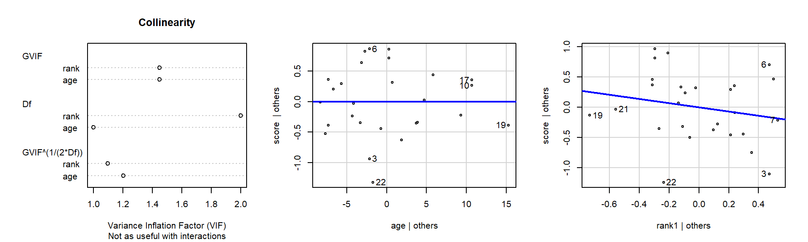
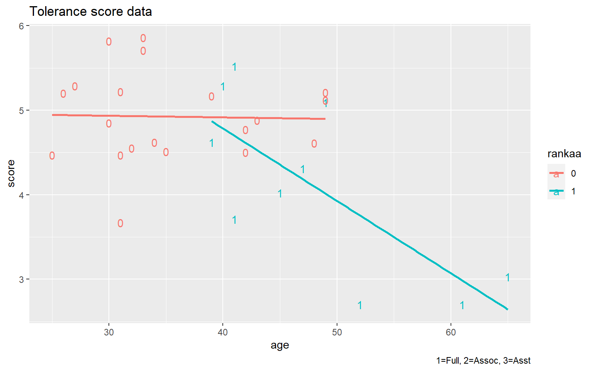
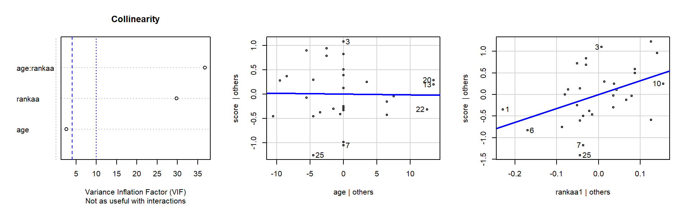

ADA2: Class 12, Ch 07a, Analysis of Covariance: Comparing Regression Lines
[Advanced Data Analysis 2](https://StatAcumen.com/teach/ada12, Stat 428/528, Spring 2023, Prof. Erik Erhardt, UNM
Author
Sina Mokhtar
Published
February 27, 2023
ANCOVA model: Faculty political tolerances
A political scientist developed a questionnaire to determine political tolerance scores for a random sample of faculty members at her university. She wanted to compare mean scores adjusted for the age for each of the three categories: full professors (coded 1), associate professors (coded 2), and assistant professors (coded 3). The data are given below. Note the higher the score, the more tolerant the individual.
Below we will fit and interpret a model to assess the dependence of tolerance score on age and rank.
# First, download the data to your computer,# save in the same folder as this Rmd file.# read the datadat_tolerate <-read_csv("ADA2_CL_12_tolerate.csv") %>%mutate(# set 3="Asst" as baseline levelrank =factor(rank) %>%relevel(3) , id =1:n() )
Rows: 30 Columns: 3
── Column specification ────────────────────────────────────────────────────────
Delimiter: ","
dbl (3): score, age, rank
ℹ Use `spec()` to retrieve the full column specification for this data.
ℹ Specify the column types or set `show_col_types = FALSE` to quiet this message.
(0 p) Describe the plotted fitted regression lines
Below is a plot of tolerance against age, using rank as a plotting symbol. Describe how tolerance score depends on age within ranks.
`geom_smooth()` using formula = 'y ~ x'
Solution
[answer]
The data plot suggests that tolerance decreases roughly linearly with age among the full professors (rank=1). The relationship between tolerance and age is much weaker (basically horizontal, no relationship) among the assistant professors (rank=3) and the associate professors (rank=2).
(0 p) Write the full model equation with indicator variables.
(You did this last class.)
Create indicators for full and associate professors, so that assistant professors serve as the reference group. Write the full model, then the separate model for each rank using general notation.
Solution
We are interested in creating a multiple regression model that allows each rank to have its own regression line. There are three ranks, so two indicator variables are needed to uniquely identify each faculty member by rank. To have assistant professors serve as the reference group, let \(I(\textrm{rank}=1)=1\) for full professors (rank=1) and \(I(\textrm{rank}=1)=0\) otherwise, and set \(I(\textrm{rank}=2)=1\) for associate professors (rank=2) and \(I(\textrm{rank}=2)=0\) otherwise. Also define the two interaction or product effects: \(I(\textrm{rank}=1)\textrm{ age}\) and \(I(\textrm{rank}=2)\textrm{ age}\).
The model that allows separate slopes and intercepts for each rank is given by: \[
\textrm{score} = \beta_0 + \beta_1 I(\textrm{rank}=1) + \beta_2 I(\textrm{rank}=2) + \beta_3 \textrm{ age} + \beta_4 I(\textrm{rank}=1)\textrm{ age} +
\beta_5 I(\textrm{rank}=2)\textrm{ age} + e.
\] For later reference, the model will be expressed by considering the three faculty ranks separately. For assistant professors with rank = 3, we have \(I(\textrm{rank}=1)=I(\textrm{rank}=2)=0\), so \[
\textrm{score} \ = \ \beta_0 + \beta_3 \textrm{ age} + e.
\] For associates with rank=2, we have \(I(\textrm{rank}=1)=0\) and \(I(\textrm{rank}=2)=1\), which gives \[
\textrm{score} \ = \ \beta_0 + \beta_2(1) + \beta_3 \textrm{ age} + \beta_5 \textrm{ age} + e
\ = \ (\beta_0 + \beta_2) + (\beta_3 + \beta_5) \textrm{ age} + e.
\] Lastly, for full professors with rank=1, we have \(I(\textrm{rank}=2)=0\) and \(I(\textrm{rank}=1)=1\), so \[
\textrm{score} \ = \ \beta_0 + \beta_1(1) + \beta_3 \textrm{ age} + \beta_4 \textrm{ age} + e
\ = \ (\beta_0 + \beta_1) + (\beta_3 + \beta_4) \textrm{ age} + e.
\]
The regression coefficients \(\beta_0\) and \(\beta_3\) are the intercept and slope for the assistant professor population regression line. The other parameters measure differences in intercepts and slopes across the three groups, using assistant professors as a baseline or reference group. In particular:
\(\beta_1 =\) difference between the intercepts of the full and assistant professors population regression lines.
\(\beta_2 =\) difference between the intercepts of the associate and assistant professors population regression lines.
\(\beta_4 =\) difference between the slopes of the full and assistant professors population regression lines.
\(\beta_5 =\) difference between the slopes of the associate and assistant professors population regression lines.
(2 p) Test for equal slopes.
Starting with a model that allows each rank to have it’s own intercept and slope, test whether the slopes are equal. If the hypothesis of equal slopes is plausible, fit the model of equal slopes and test whether intercepts are equal.
lm_s_a_r_ar <-lm( score ~ age * rank , data = dat_tolerate )
[answer] check assumptions:
The residuals are roughly distributed normal based on QQplot. there are no significant outlier. the distribution of data in rank 1 and 3 group is wider in compare to rank 2 but the this difference is not big. There is not enough evidence that we can tell variance is not constant between all groups. based on box-cox plot we do not need transformation. In general all assumptions are met.
Since the interaction age:rank is significant (p-value = 0.02872 < .05) so we can reject the null hypothesis (equal slopes) and as conclusion the slops are not equal.
(1 p) Reduce the model.
Given the tests in the previous part, reduce the model using backward selection.
Start with the full model, test for equal slopes.
If slopes are equal (not significantly for being different), then test for equal intercepts.
If intercepts are equal, test for any slope.
If slope is zero, then the grand mean intercept is the best model.
Solution
[answer] The interaction is significant so Slops are not equals so the full model is acceptable and no need to reduction.
(0 p) Write the fitted model equation.
Last class you wrote these model equations. Modify to your reduced model if necessary.
summary(lm_s_a_r_ar)
Call:
lm(formula = score ~ age * rank, data = dat_tolerate)
Residuals:
Min 1Q Median 3Q Max
-1.34746 -0.28793 0.01405 0.36653 1.07669
Coefficients:
Estimate Std. Error t value Pr(>|t|)
(Intercept) 5.42706 0.98483 5.511 1.15e-05 ***
age -0.01321 0.02948 -0.448 0.6580
rank1 2.78490 1.51591 1.837 0.0786 .
rank2 -1.22343 1.50993 -0.810 0.4258
age:rank1 -0.07247 0.03779 -1.918 0.0671 .
age:rank2 0.03022 0.04165 0.726 0.4751
---
Signif. codes: 0 '***' 0.001 '**' 0.01 '*' 0.05 '.' 0.1 ' ' 1
Residual standard error: 0.6378 on 24 degrees of freedom
Multiple R-squared: 0.5112, Adjusted R-squared: 0.4093
F-statistic: 5.02 on 5 and 24 DF, p-value: 0.002748
(1 p) Aside: regression line estimation with interaction
(The question is at the bottom of this exposition.)
One feature to notice is that the observation 7 in the group of full professors appears to have an unusually low tolerance for his age (2.70 52 1). If you temporarily hold this observation out of the analysis, you still conclude that the population regression lines have different slopes.
# exclude observation 7 from tolerate7 datasetdat_tolerate7 <- dat_tolerate %>%slice(-7)lm7_s_a_r_ar <-lm( score ~ age * rank , data = dat_tolerate7 )library(car)Anova(aov(lm7_s_a_r_ar), type=3)
Call:
lm(formula = score ~ age * rank, data = dat_tolerate7)
Residuals:
Min 1Q Median 3Q Max
-1.34746 -0.31099 0.01162 0.30310 0.94978
Coefficients:
Estimate Std. Error t value Pr(>|t|)
(Intercept) 5.42706 0.93827 5.784 6.82e-06 ***
age -0.01321 0.02808 -0.470 0.6425
rank1 2.58793 1.44812 1.787 0.0871 .
rank2 -1.22343 1.43853 -0.850 0.4038
age:rank1 -0.06586 0.03618 -1.821 0.0817 .
age:rank2 0.03022 0.03968 0.762 0.4540
---
Signif. codes: 0 '***' 0.001 '**' 0.01 '*' 0.05 '.' 0.1 ' ' 1
Residual standard error: 0.6076 on 23 degrees of freedom
Multiple R-squared: 0.4706, Adjusted R-squared: 0.3555
F-statistic: 4.088 on 5 and 23 DF, p-value: 0.0084
This observation has a fairly large impact on the estimated intercept and slope for the full professor regression line, but has no effect whatsoever on the estimated intercepts or slopes for the two other ranks. Why?
[answer] when we include interaction we determined a regression line separately for each group, so the slope and intercept of the regression for each group is the one that minimize the least squares for that group only based on the data for that specific group. so when we remove a point from prof group it only effect the slope and intercept of prof group. However it would effect the residual standard error which uses to calculating the p-values (it would effect the hypothesis test).
Additional analyses, possible directions
We’ll explore four possible sets of additional analyses that help us understand the relationships we found.
There are a number of possible directions here. We found earlier that there was an interaction, so there’s evidence for different slopes.
Use the Wald test to perform pairwise comparisons for the regression line slope between ranks.
Use the Wald test to perform pairwise comparisons for the regression line slope and intercept between ranks.
Observe that Full professors (rank = 1) are the only ones that have ages greater than 50, and those three observations are systematically different from scores for faculty not older than 50 – thus these three observations could be removed and inference could be limited to faculty from 25–50 years old.
Combine the junior faculty (assistant and associate: AA).
Other ideas are possible, but these are enough.
(0 p) Direction 1: pairwise comparison of regression line slope between ranks
I’ll get you started using the Wald test to set up 1+ degree-of-freedom hypothesis tests.
Earlier we found that slopes are different. We will use the Wald test to perform comparisons of slopes between pairs of ranks.
We’ll discuss the linear algebra specification of these hypothesis test in class.
Solution
The tests below indicate that there’s an interaction because the slopes for Ranks 1 and 2 differ. Because we’re performing three tests, it is appropriate to compare these p-values to a significance level controlling the familywise Type-I error rate; the Bonferroni threshold is 0.05/3=0.01667.
# first, find the order of the coefficientscoef(lm_s_a_r_ar)
(2 p) Direction 2: pairwise comparison of regression lines (slope and intercept) between ranks
To test whether the regression line is different between ranks, in the null hypothesis \(H_0\) we need to set both the slope and the intercept equal between a selected pair of ranks.
Here’s the first example:
# first, find the order of the coefficientscoef(lm_s_a_r_ar)
[answer] Test01: we do not have evidence that full prof and assistant have the same regression line. Test02: we do not have evidence that associate and assistant have the same regression line. Test03: since the p-value is less than .05 we reject the null hypothesis(same regression line) and as conclusion the associate and full prof do not have the same regression line.
(1 p) Direction 3: exclude ages \(> 50\) and reanalyze
Drop observations with age > 50 and refit the model. Remember to check model assumptions, then do backward selection (manually), then check the final model assumptions.
Solution
newdat = dat_tolerate %>%filter( age<50 )lm_s_a_r_ar <-lm( score ~ age * rank , data = newdat )
check assumptions:
The residuals are roughly distributed normal based on QQplot. the observation 2 is influential but there are no significant outlier. the distribution of data in rank 1 and 3 group is wider in compare to rank 2 but the this difference is not big. There is not enough evidence that we can tell variance is not constant between all groups. based on box-cox plot we do not need transformation. In general all assumptions are met.
Since the interaction age:rank is not significant (p-value = .72 > .05) so we can not reject the null hypothesis so there is no interaction between age and rank.
lm_s_a_r_ar <-lm( score ~ age + rank , data = newdat )
Non-constant Variance Score Test
Variance formula: ~ fitted.values
Chisquare = 0.06355161, Df = 1, p = 0.80097
Warning in e_plot_lm_diagostics(lm_s_a_r_ar): Note: Collinearity plot unreliable
for predictors that also have interactions in the model.

Then, test the hypothesis of equal slopes.
library(car)Anova(aov(lm_s_a_r_ar), type=3)
Anova Table (Type III tests)
Response: score
Sum Sq Df F value Pr(>F)
(Intercept) 21.8175 1 61.7061 5.858e-08 ***
age 0.0000 1 0.0001 0.9930
rank 0.3429 2 0.4848 0.6219
Residuals 8.1322 23
---
Signif. codes: 0 '***' 0.001 '**' 0.01 '*' 0.05 '.' 0.1 ' ' 1
summary(lm_s_a_r_ar)
Call:
lm(formula = score ~ age + rank, data = newdat)
Residuals:
Min 1Q Median 3Q Max
-1.32472 -0.36970 -0.00364 0.35972 0.86892
Coefficients:
Estimate Std. Error t value Pr(>|t|)
(Intercept) 4.9896329 0.6351915 7.855 5.86e-08 ***
age 0.0001641 0.0185542 0.009 0.993
rank1 -0.3452854 0.3512975 -0.983 0.336
rank2 -0.1409191 0.2855001 -0.494 0.626
---
Signif. codes: 0 '***' 0.001 '**' 0.01 '*' 0.05 '.' 0.1 ' ' 1
Residual standard error: 0.5946 on 23 degrees of freedom
Multiple R-squared: 0.0564, Adjusted R-squared: -0.06668
F-statistic: 0.4583 on 3 and 23 DF, p-value: 0.7141
check assumptions:
The residuals are roughly distributed normal based on QQplot. the observation 22 is influential but there are no significant outlier. the distribution of data in rank 1 and 3 group is wider in compare to rank 2 but the this difference is not big. There is not enough evidence that we can tell variance is not constant between all groups. based on box-cox plot we do not need transformation. In general all assumptions are met.
Since the p-value is not significant so there is not enough evidence for different intercept so we can remove the rank from the model
Non-constant Variance Score Test
Variance formula: ~ fitted.values
Chisquare = 0.4899539, Df = 1, p = 0.48395
Warning in e_plot_lm_diagostics(lm_s_a_r_ar): Collinearity plot only available
with at least two predictor (x) variables.
Then, test the hypothesis of equal slopes.
library(car)Anova(aov(lm_s_a_r_ar), type=3)
Anova Table (Type III tests)
Response: score
Sum Sq Df F value Pr(>F)
(Intercept) 27.7698 1 81.9167 2.306e-09 ***
age 0.1432 1 0.4225 0.5216
Residuals 8.4750 25
---
Signif. codes: 0 '***' 0.001 '**' 0.01 '*' 0.05 '.' 0.1 ' ' 1
summary(lm_s_a_r_ar)
Call:
lm(formula = score ~ age, data = newdat)
Residuals:
Min 1Q Median 3Q Max
-1.24769 -0.36315 -0.03972 0.36398 0.96194
Coefficients:
Estimate Std. Error t value Pr(>|t|)
(Intercept) 5.221970 0.576963 9.051 2.31e-09 ***
age -0.009815 0.015100 -0.650 0.522
---
Signif. codes: 0 '***' 0.001 '**' 0.01 '*' 0.05 '.' 0.1 ' ' 1
Residual standard error: 0.5822 on 25 degrees of freedom
Multiple R-squared: 0.01662, Adjusted R-squared: -0.02272
F-statistic: 0.4225 on 1 and 25 DF, p-value: 0.5216
check assumptions:
The residuals are roughly distributed normal based on QQplot. the observation 22 is influential but there are no significant outlier. the distribution of data in rank 1 and 3 group is wider in compare to rank 2 but the this difference is not big. There is not enough evidence that we can tell variance is not constant between all groups. based on box-cox plot we do not need transformation. In general all assumptions are met.
Since the p-value is not significant so there is not enough evidence for a slope for age different from one. so we replace age with one and fitt the model again.
Anova Table (Type III tests)
Response: score
Sum Sq Df F value Pr(>F)
(Intercept) 636.17 1 1919.2 < 2.2e-16 ***
Residuals 8.62 26
---
Signif. codes: 0 '***' 0.001 '**' 0.01 '*' 0.05 '.' 0.1 ' ' 1
summary(lm_s_a_r_ar)
Call:
lm(formula = score ~ 1, data = newdat)
Residuals:
Min 1Q Median 3Q Max
-1.18407 -0.34907 -0.00407 0.36093 1.00593
Coefficients:
Estimate Std. Error t value Pr(>|t|)
(Intercept) 4.8541 0.1108 43.81 <2e-16 ***
---
Signif. codes: 0 '***' 0.001 '**' 0.01 '*' 0.05 '.' 0.1 ' ' 1
Residual standard error: 0.5757 on 26 degrees of freedom
so 4.85 is the grand mean and is the simplest and final model.
(3 p) Direction 4: Combine the junior faculty (asst and assoc)
Create a new factor variable rankaa that combines ranks 2 and 3 as value 0, but has rank 1 still value 1.
dat_tolerate <- dat_tolerate %>%mutate(# indicator for Full vs (Assist & Assoc)rankaa =case_when( rank %in%c(2, 3) ~0# Assist & Assoc , rank %in%c(1 ) ~1# Full ) , rankaa =factor(rankaa) , rankaa =relevel(rankaa, "0") )
Note that in Direction 2 above we tested whether the assistants and the associates have the same population regression line and found they were not statistically different. We had performed a simultaneous hypothesis test, same as below. (Note that this is an alternate way to do the simultaneous test when we are testing that the coefficients are equal to zero (using Terms = c(4, 6)); we did this differently above because I wanted to show the more general way of comparing whether coefficients were also equal to each other or possibly equal to a value different from zero).
lm_s_a_r_ar <-lm( score ~ age * rank , data = dat_tolerate )coef(lm_s_a_r_ar)
library(aod) # for wald.test()# Typically, we are interested in testing whether individual parameters or# set of parameters are all simultaneously equal to 0s# However, any null hypothesis values can be included in the vector coef.test.values.coef_test_values <-rep(0, length(coef(lm_s_a_r_ar)))library(aod) # for wald.test()test_wald <-wald.test(b =coef(lm_s_a_r_ar) - coef_test_values , Sigma =vcov(lm_s_a_r_ar) , Terms =c(4, 6) )test_wald
The p-value for this test is approximately 0.7, which suggests that the population regression lines for these two groups are not significantly different.
At this point I would refit the model, omitting the \(I(\textrm{rank}=2)\) and \(I(\textrm{rank}=2)\textrm{ age}\) effects. \[
\textrm{score} = \beta_0 + \beta_1 I(\textrm{rank}=1) + \beta_3 \textrm{ age} + \beta_4 I(\textrm{rank}=1)\textrm{ age} + e.
\] This model produces two distinct regression lines, one for the full professors and one for the combined assistants and associates.
Do this.
Using the combined AA rank data, do the following and interpret each result:
plot the data
fit the full interaction model, reduce if possible
write out the separate model equations for the Full and AA ranks
check model assumptions
reduce the model (if appropriate) and recheck assumptions
Solution
[answer]
`geom_smooth()` using formula = 'y ~ x'

lm_s_a_r_ar <-lm( score ~ age * rankaa , data = dat_tolerate )coef(lm_s_a_r_ar)
(Intercept) age rankaa1 age:rankaa1
4.993406393 -0.001926941 3.218560640 -0.083759873
Non-constant Variance Score Test
Variance formula: ~ fitted.values
Chisquare = 0.1326644, Df = 1, p = 0.71569
there are higher-order terms (interactions) in this model
consider setting type = 'predictor'; see ?vif
Warning in e_plot_lm_diagostics(lm_s_a_r_ar): Note: Collinearity plot unreliable
for predictors that also have interactions in the model.

check assumptions:
The residuals are roughly distributed normal based on QQplot. there are no significant outlier. There is not enough evidence that we can tell variance is not constant between two groups. based on box-cox plot we do not need transformation. In general all assumptions are met.
Call:
lm(formula = score ~ age * rankaa, data = dat_tolerate)
Residuals:
Min 1Q Median 3Q Max
-1.26367 -0.37032 -0.05807 0.33922 1.07669
Coefficients:
Estimate Std. Error t value Pr(>|t|)
(Intercept) 4.993406 0.682148 7.320 8.97e-08 ***
age -0.001927 0.018811 -0.102 0.9192
rankaa1 3.218561 1.315436 2.447 0.0215 *
age:rankaa1 -0.083760 0.029768 -2.814 0.0092 **
---
Signif. codes: 0 '***' 0.001 '**' 0.01 '*' 0.05 '.' 0.1 ' ' 1
Residual standard error: 0.6225 on 26 degrees of freedom
Multiple R-squared: 0.4956, Adjusted R-squared: 0.4374
F-statistic: 8.515 on 3 and 26 DF, p-value: 0.0004174
Since the interaction is significant so this is the final model \[
\textrm{score} = \beta_0 + \beta_1 I(\textrm{rankaa}=1) + \beta_3 \textrm{ age} + \beta_4 I(\textrm{rankaa}=1)\textrm{ age}.
\]